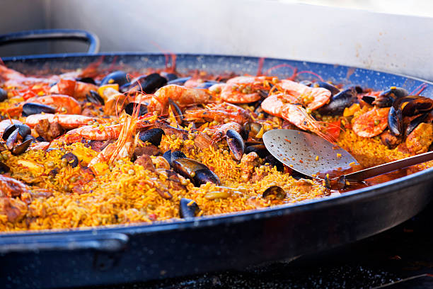
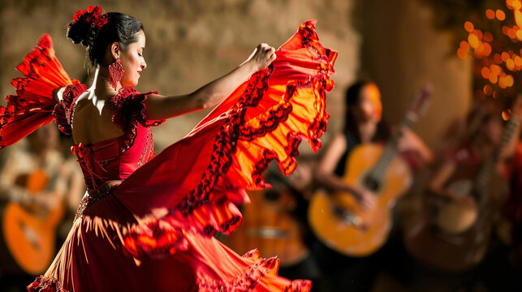
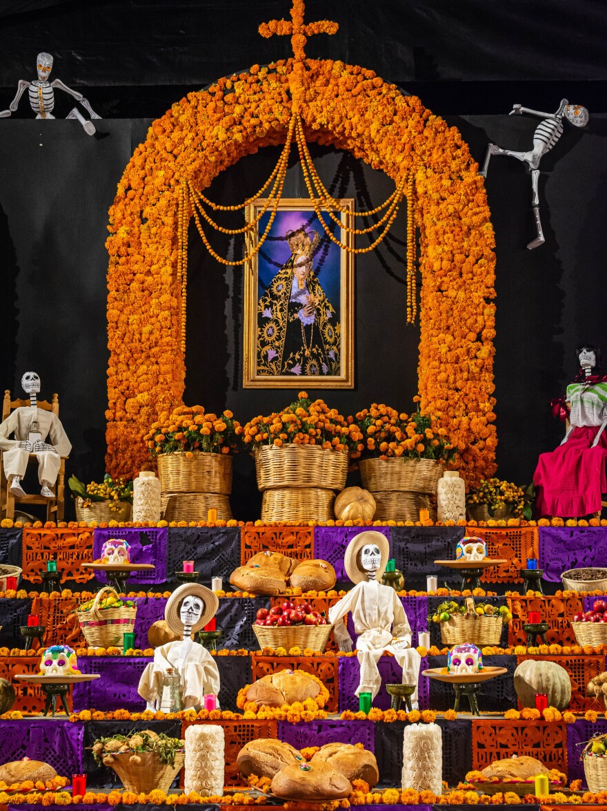
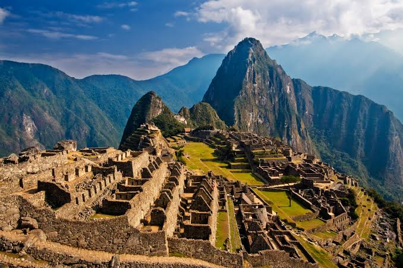
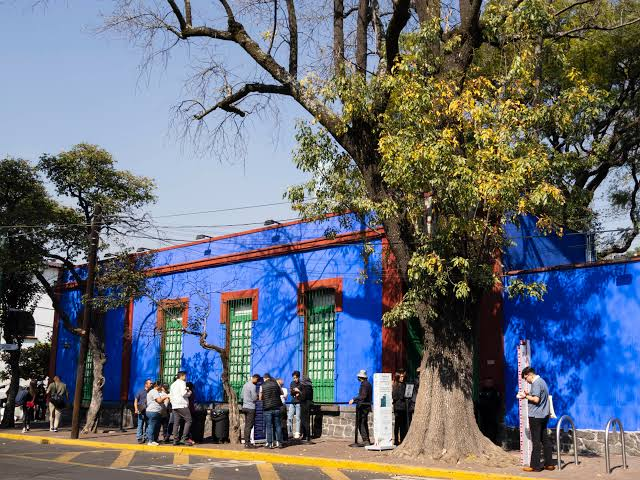

Topic Introduction: Across the Spanish-speaking world, food is far more than daily sustenance—it is a living archive of indigenous agricultural wisdom, transoceanic trade, and family togetherness. From bustling street stalls in Mexico City to seaside kitchens in Valencia, sharing a meal is the primary way communities celebrate identity and hospitality.
Cultural Research: Origins, History & Cultural Meaning
Hispanic cuisine was born from el encuentro de dos mundos (the meeting of two worlds). Prior to 1492, Mesoamerican and Andean civilizations cultivated foundational crops such as el maíz (corn), el aguacate (avocado), el jitomate (tomato), and el cacao (cocoa), grinding nixtamalized kernels on a volcanic stone mortar alongside el chile (chili pepper), la calabaza (squash), and el frijol (bean). Meanwhile, the Iberian Peninsula developed rich culinary traditions shaped by Roman olive groves and centuries of Moorish agricultural engineering, which introduced el arroz (rice), el azafrán (saffron), and el aceite de oliva (olive oil) to southern Spain.
When these culinary worlds converged, iconic regional dishes emerged. On Spain's Mediterranean coast, farm laborers cooked la paella over open orange-wood fires, prizing el socarrat—the caramelized, toasted bottom layer of rice—seasoned with el ajo (garlic) and la cebolla (onion), while Andalusian workers blended chilled el gazpacho and shared small plates of las tapas and crispy la tortilla española. Across Latin America, cooks perfected handmade la tortilla, slow-simmered el mole, citrus-cured el ceviche, and la empanada, finishing celebrations with el churro and el plátano.
Culturally, Hispanic dining revolves around la sobremesa—the cherished custom of lingering at the table long after the plates are cleared to converse, laugh, and strengthen family bonds over el postre (dessert). In both Spain and Latin America, rushing away from the table is considered impolite because the conversation is treated as the most nourishing course of the meal.

🌟 4 Fascinating Cultural Facts about Hispanic Food
- UNESCO World Heritage Status: In 2010, Traditional Mexican Cuisine (el paradigma de Michoacán) and the Mediterranean Diet of Spain were both inscribed on UNESCO's Intangible Cultural Heritage of Humanity list.
- The Sacred Milpa Triad: Indigenous farmers in Mexico and Central America planted la milpa—intercropping corn (el maíz), beans (el frijol), and squash (la calabaza) so the beans fixed nitrogen in the soil while corn stalks supported the climbing vines.
- No Equivalent Word in English: The Spanish word la sobremesa ("over the table") has no single-word English translation; Spaniards routinely spend 45 to 90 minutes chatting at the table after weekend lunches.
- Saffron ("Red Gold"): Producing a single pound of dry Spanish azafrán in Castilla-La Mancha requires hand-harvesting the crimson stigmas of roughly 75,000 crocus blossoms at dawn.
| # | Spanish | English | Ejemplo en contexto (Example Sentence) |
|---|---|---|---|
| 1 | la sobremesa | after-meal table conversation | En nuestra casa, la sobremesa del domingo dura casi dos horas. |
| 2 | el maíz | corn / maize | Las comunidades indígenas cultivan el maíz desde hace milenios. |
| 3 | el azafrán | saffron | Unas hebras de azafrán dan un aroma único y color dorado al plato. |
| 4 | la paella | Valencian saffron rice dish | El domingo preparamos la paella con conejo, pollo y verduras frescas. |
| 5 | el socarrat | toasted crispy rice crust | La parte más deliciosa de la paella es el socarrat del fondo. |
| 6 | el aguacate | avocado | Machacamos el aguacate maduro con cilantro, limón y una pizca de sal. |
| 7 | el jitomate | red tomato (Central Mexico) | Asamos el jitomate en el comal para preparar una salsa casera. |
| 8 | el cacao | cocoa bean / cacao | Los antiguos mayas valoraban el cacao como moneda y bebida ceremonial. |
| 9 | el aceite de oliva | olive oil | España exporta el aceite de oliva virgen extra a todo el mundo. |
| 10 | el gazpacho | chilled Andalusian tomato soup | En el verano andaluz, un vaso de gazpacho frío refresca el cuerpo. |
| 11 | la tortilla española | Spanish potato & egg omelet | Pedimos una ración de tortilla española jugosa en la cafetería. |
| 12 | la tortilla | corn or flour flatbread | Mi abuela calienta la tortilla de maíz recién hecha en el comal. |
| 13 | el mole | spiced chili-chocolate sauce | El mole poblano combina chiles secos, especias, semillas y chocolate. |
| 14 | el ceviche | citrus-marinated raw fish | En la costa peruana, el ceviche se sirve con cebolla morada y camote. |
| 15 | la empanada | savory stuffed pastry turnover | Compramos una docena de empanadas horneadas de carne y aceitunas. |
| 16 | las tapas | small savory Spanish appetizers | Salimos con amigos a probar las tapas por el centro histórico. |
| 17 | el churro | fried dough pastry stick | Desayunamos el churro crujiente mojado en una taza de chocolate espeso. |
| 18 | el chile | chili pepper | El chile aporta picante, aroma y vitaminas a la cocina mexicana. |
| 19 | el frijol | bean | El frijol negro con epazote acompaña muchos platos tradicionales. |
| 20 | la calabaza | squash / pumpkin | En otoño cocinamos flores y trozos de calabaza en cazuela de barro. |
| 21 | el plátano | plantain / banana | En el Caribe, el plátano maduro frito acompaña el arroz con habichuelas. |
| 22 | el ajo | garlic | Sofreímos dos dientes de ajo picado antes de añadir el caldo. |
| 23 | la cebolla | onion | Picamos la cebolla finamente para la base del sofrito tradicional. |
| 24 | el arroz | rice | El arroz de grano corto absorbe todos los sabores del caldo marino. |
| 25 | el postre | dessert | Para cerrar el almuerzo familiar, compartimos flan casero como postre. |
💬 Diálogo en el Restaurante: «Un Almuerzo entre Dos Mundos»
Camarero: ¡Buenas tardes! Hoy tenemos el gazpacho andaluz de entrada, el ceviche peruano y la paella con azafrán y buen socarrat.
Waiter: Good afternoon! Today we have Andalusian gazpacho as a starter, Peruvian ceviche, and paella with saffron and a great crispy rice crust.
Cliente: ¡Qué rico! ¿Tienen también la empanada y el mole con tortilla de maíz?
Customer: How delicious! Do you also have the empanada and mole sauce with corn tortillas?
Camarero: ¡Por supuesto! Y para el postre les recomiendo el churro con chocolate de cacao puro mientras disfrutan de la sobremesa.
Waiter: Of course! And for dessert I recommend the churro with pure cacao hot chocolate while you enjoy your after-meal conversation.
Lo que aprendí y sentí (What I learned and felt)
Yadunandan A.: Researching Hispanic gastronomy taught me that everyday ingredients we take for granted around the world—like tomatoes (el jitomate), corn (el maíz), avocados (el aguacate), and chocolate (el cacao)—were domesticated over thousands of years by indigenous communities in the Americas. What surprised me the most was discovering the cultural concept of la sobremesa, where time spent conversing after a meal is valued just as much as the food itself. I felt deeply inspired by how food serves as a bridge of memory and warmth across Spain and Latin America, and it made me want to slow down and appreciate meals with my own family.
Topic Introduction: Music and dance in the Hispanic world are inseparable from history, migration, and collective resilience. Blending Indigenous flutes, Iberian stringed instruments, and West African polyrhythms, Hispanic musical traditions express everything from profound sorrow to exuberant street celebration.
Cultural Research: Origins, History & Cultural Meaning
In southern Spain, el flamenco emerged in Andalusia through the cultural crossroads of Gitano (Romani), Moorish, Sephardic, and Andalusian communities. Flamenco rests on three pillars: el cante (passionate vocal singing), el toque (virtuosic playing of la guitarra), and percussive footwork known as el zapateado, accompanied by rhythmic handclaps (las palmas), wooden las castañuelas, and the resonant box drum (el cajón) originally brought from Afro-Peruvian music. Performers strive to channel el duende—a mysterious, chill-inducing surge of raw emotional authenticity inside a tablao or el escenario (stage).
Across the Atlantic, working-class port neighborhoods of Buenos Aires and Montevideo gave birth to el tango in the late 19th century, driven by the melancholic breath of el bandoneón. In the Caribbean and northern South America, African percussion—such as el tambor, la maraca, and la clave—merged with Spanish la melodía and la letra (lyrics) to create Cuban and Puerto Rican la salsa, Dominican el merengue and la bachata, and Colombian la cumbia.
Meanwhile, Mexico's el mariachi ensembles unite violins, trumpets, and guitars to perform at milestones from serenades to funerals. Whether guided by el compás (beat/meter), el ritmo, el paso (dance step), or la pareja (dance partner), every el bailarín and el cantante preserves ancestral memory through movement.

🌟 4 Fascinating Cultural Facts about Hispanic Music & Dance
- How the Peruvian Cajón Entered Flamenco: While touring Lima in 1977, legendary Spanish guitarist Paco de Lucía heard Afro-Peruvian percussionist Caitro Soto playing a wooden crate drum (el cajón) and brought it back to Spain, where it became a staple of modern flamenco.
- The Untranslatable Duende: Poet Federico García Lorca famously described el duende not as technical skill, but as a mysterious power buried inside the performer's soles that everyone in the room feels but no philosopher can explain.
- A German Instrument in Argentine Tango: El bandoneón was originally invented in 1840s Germany by Heinrich Band for portable religious music before sailors brought it to the Río de la Plata, where it became the soul of el tango.
- The 3-2 / 2-3 Heartbeat of La Clave: Virtually all salsa music is structured around a five-note rhythmic timeline played on two hardwood sticks called la clave; if a musician loses la clave, the entire band falls out of sync.
| # | Spanish | English | Ejemplo en contexto (Example Sentence) |
|---|---|---|---|
| 1 | el flamenco | Andalusian music & dance art form | El flamenco combina canto profundo, guitarra y baile expresivo. |
| 2 | el duende | soulful artistic passion / spirit | La bailaora emocionó al público porque bailó con mucho duende. |
| 3 | el zapateado | percussive rhythmic footwork | El zapateado resuena con fuerza sobre las tablas de madera. |
| 4 | las castañuelas | castanets | Ella marca el tiempo tocando las castañuelas con ambas manos. |
| 5 | el cajón | wooden box drum | El percusionista se sienta sobre el cajón para acompañar la guitarra. |
| 6 | las palmas | rhythmic handclapping | Los músicos acompañan el cante tocando las palmas a contratiempo. |
| 7 | el compás | musical beat / rhythmic cycle | En el flamenco es fundamental no perder nunca el compás. |
| 8 | la guitarra | guitar | Las seis cuerdas de la guitarra española lloran en la noche. |
| 9 | el bandoneón | tango button concertina | El sonido nostálgico de el bandoneón define las noches de Buenos Aires. |
| 10 | el tango | Argentine & Uruguayan partner dance | Vimos a dos artistas bailar el tango en el barrio de San Telmo. |
| 11 | la salsa | Afro-Caribbean dance music | En Cali y San Juan, la salsa se escucha en cada esquina. |
| 12 | la cumbia | Colombian folk & popular rhythm | La cumbia nació en la costa caribeña de Colombia con tambores y gaitas. |
| 13 | el merengue | upbeat Dominican music & dance | El merengue dominicano tiene un ritmo rápido y muy alegre. |
| 14 | la bachata | Dominican guitar-driven dance music | Aprendimos los pasos básicos de la bachata en la academia de baile. |
| 15 | el mariachi | traditional Mexican musical ensemble | El mariachi llegó a la plaza con violines, trompetas y guitarrón. |
| 16 | el ritmo | rhythm | El ritmo afrocaribeño invita a todo el mundo a levantarse a bailar. |
| 17 | la melodía | melody / tune | Todavía recuerdo la melodía que cantaba mi abuelo en el pueblo. |
| 18 | la letra | song lyrics | La letra de esta canción habla de la nostalgia por la tierra natal. |
| 19 | el cantante | singer | El cantante saludó al público antes de interpretar su tema más famoso. |
| 20 | el bailarín | dancer | El bailarín practicó su giro durante horas frente al espejo. |
| 21 | el escenario | stage | Cuando se encendieron las luces, los músicos subieron a el escenario. |
| 22 | el tambor | drum | El golpe profundo de el tambor marca la raíz africana de la cumbia. |
| 23 | la maraca | maraca / gourd shaker | El músico agita la maraca con precisión durante el coro de salsa. |
| 24 | el paso | dance step | La profesora nos enseñó el paso básico antes de poner la música. |
| 25 | la pareja | dance partner / couple | En el tango, la comunicación silenciosa con la pareja es esencial. |
💬 Diálogo en la Academia de Baile: «Aprendiendo el Compás»
Profesora Lucía: ¡Bienvenidos a el escenario! Hoy practicaremos el paso básico de la salsa y luego escucharemos el flamenco con la guitarra y el cajón.
Professor Lucía: Welcome to the stage! Today we will practice the basic step of salsa and then listen to flamenco with the guitar and box drum.
Estudiante: Profesora, ¿cómo puedo mantener el compás y el ritmo cuando bailo con la pareja?
Student: Professor, how can I keep the beat and rhythm when I dance with my partner?
Profesora Lucía: Escucha el tambor, la maraca y las palmas. No pienses solo en la técnica: siente la melodía, la letra y deja salir el duende en tu zapateado.
Professor Lucía: Listen to the drum, the maraca, and the handclaps. Don't only think about technique: feel the melody, the lyrics, and let the soulful spirit out in your footwork.
Lo que aprendí y sentí (What I learned and felt)
Abhinav A Nair: Exploring Hispanic music and dance showed me how deeply rhythms carry the stories of marginalized and migrant communities—from Gitano families in Andalusia creating el flamenco to Afro-Peruvian musicians inventing el cajón. I was surprised to learn that the iconic bandoneón of Argentine tango actually originated in Germany and that the Peruvian box drum only joined flamenco in the 1970s. Listening to these genres while writing this section made me feel energized and moved by the concept of el duende, reminding me that music is a universal language of human emotion.
Topic Introduction: Public festivals across Spain and Latin America transform city plazas into vibrant theaters of communal memory, satire, gratitude, and renewal. Rather than passive spectacles, Hispanic festivals invite entire neighborhoods to build altars, sew costumes, march in parades, and celebrate the cycle of life together.
Cultural Research: Origins, History & Cultural Meaning
Hispanic festivals often blend pre-Columbian or ancient seasonal rituals with Catholic feast days. Every November 1st and 2nd, Mexican families celebrate el Día de los Muertos (Day of the Dead), a joyful reunion between the living and departed ancestors rooted in Nahua and Purépecha traditions. Families construct a multi-tiered el altar adorned with la ofrenda (offerings): golden petals of el cempasúchil (Mexican marigold), flickering la vela (candle), el incienso (copal incense), el papel picado (cut tissue-paper banners), sweet el pan de muerto, and whimsical sugar skulls (la calavera) before gathering at el cementerio to honor el antepasado (ancestor).
In Spain, March brings las Fallas in Valencia, where neighborhood committees spend an entire year crafting towering satirical sculptures (el ninot) out of wood and papier-mâché. Amid booming la pólvora (gunpowder) and los fuegos artificiales (fireworks), every monument except one pardoned figure is burned in a massive purifying la hoguera (bonfire) on the night of la Cremà. Months later, the town of Buñol hosts la Tomatina, while springtime brings solemn la procesión marches during la Semana Santa alongside the patron saint's la verbena.
In South America and the Caribbean, el carnaval in Barranquilla or Oruro fills streets with el desfile (parade), la comparsa (dance troupe), la carroza (float), el disfraz (costume), and la máscara (mask), while Cusco revives the Inca winter solstice festival of Inti Raymi.

🌟 4 Fascinating Cultural Facts about Hispanic Festivals
- Not "Mexican Halloween": El Día de los Muertos is not about fear or ghosts; according to indigenous Nahua cosmovision, scattering bright orange cempasúchil petals and lighting copal incense creates a sensory path so loved ones' souls can find their way back to the family table.
- The Single Pardoned Sculpture (El Ninot Indultat): During Valencia's Las Fallas, over 700 giant satirical monuments are burned to ashes on March 19—except for one single figure voted on by the public to be saved in the Fallero Museum.
- 120 Tons of Overripe Tomatoes: Every last Wednesday of August in Buñol, Spain, roughly 20,000 participants hurl over 120 metric tons of crushed, non-edible tomatoes at one another for exactly one hour during La Tomatina.
- Inti Raymi in Cusco, Peru: Every June 24th at the Inca fortress of Sacsayhuamán, hundreds of actors speaking the indigenous Quechua language reenact the ancient Festival of the Sun to welcome the southern hemisphere's new agricultural year.
| # | Spanish | English | Ejemplo en contexto (Example Sentence) | |
|---|---|---|---|---|
| 1 | el Día de los Muertos | Day of the Dead (Nov 1–2) | En noviembre celebramos el Día de los Muertos recordando a la familia. | |
| 2 | la ofrenda | ritual altar offering | Colocamos agua, sal y la comida favorita del abuelo en la ofrenda. | |
| 3 | el cempasúchil | Mexican marigold flower | El aroma y el color naranja de el cempasúchil guían a las almas. | |
| 4 | la calavera | decorative sugar or clay skull | Los niños recibieron la calavera de azúcar con su nombre en la frente. | |
| 5 | el pan de muerto | sweet orange-blossom festival bread | Compartimos el pan de muerto espolvoreado con azúcar y chocolate caliente. | |
| 6 | el papel picado | chiseled colorful tissue banners | El papel picado se mueve con el viento y representa el elemento aire. | |
| 7 | el altar | altar | Construimos el altar de tres niveles con fotografías antiguas. | |
| 8 | la vela | candle | Cada familiar enciende la vela blanca como símbolo de esperanza y luz. | |
| 9 | el cementerio | cemetery / graveyard | En Pátzcuaro, las familias pasan la noche cantando en el cementerio. | |
| 10 | el antepasado | ancestor | Honrar a el antepasado mantiene viva la historia de la comunidad. | |
| 11 | el incienso | incense (especially copal resin) | El humo aromático de el incienso de copal purifica el hogar. | |
| 12 | las Fallas | Valencian March festival of fire | Durante las Fallas, las calles de Valencia se llenan de arte y música. | |
| 13 | el ninot | papier-mâché satirical figure | Los artistas falleros pintaron el ninot con mucho humor político. | |
| 14 | la hoguera | bonfire | A medianoche, el monumento arde en una impresionante hoguera. | |
| 15 | la pólvora | gunpowder | El olor a la pólvora anuncia el inicio de la mascletà al mediodía. | |
| 16 | los fuegos artificiales | fireworks | Los fuegos artificiales iluminaron el cielo nocturno sobre el río Turia. | |
| 17 | el desfile | parade | Miles de personas aplaudieron el desfile desde los balcones. | |
| 18 | la carroza | parade float | La carroza principal estaba decorada con miles de flores naturales. | |
| 19 | el disfraz | costume | Mi prima cosió a mano el disfraz colorido para el carnaval. | |
| 20 | la máscara | mask | El artesano talló la máscara tradicional de madera y la pintó de oro. | |
| 21 | el carnaval | Carnival festival | El carnaval de Barranquilla proclama que «quien lo vive es quien lo goza». | |
| 22 | la procesión | solemn religious procession | La procesión avanza lentamente al compás de los tambores. | |
| 23 | la Semana Santa | Holy Week | En Sevilla y Antigua Guatemala, la Semana Santa atrae a miles de visitantes. | |
| 24 | la Tomatina | Buñol's annual tomato battle festival | Los participantes usan gafas protectoras durante la fiesta de la Tomatina. | |
| 25 | la comparsa | costumed carnival street troupe | La comparsa del barrio ensayó su coreografía durante seis meses. |
💬 Diálogo en la Plaza: «Preparando la Ofrenda y el Desfile»
Abuela Elena: Nieta, pásame el papel picado, la vela y las flores de cempasúchil para terminar el altar de el Día de los Muertos.
Grandmother Elena: Granddaughter, pass me the cut paper banners, the candle, and the marigold flowers so we can finish the Day of the Dead altar.
Valeria: ¡Aquí están, abuela! También compré el pan de muerto, el incienso y la calavera de azúcar para la ofrenda de nuestro antepasado.
Valeria: Here they are, Grandma! I also bought the pan de muerto bread, the incense, and the sugar skull for our ancestor's offering.
Abuela Elena: ¡Qué hermoso! Después de visitar el cementerio, veremos el desfile con la comparsa, la máscara y los fuegos artificiales en la plaza.
Grandmother Elena: How beautiful! After visiting the cemetery, we will watch the parade with the dance troupe, masks, and fireworks in the square.
Lo que aprendí y sentí (What I learned and felt)
Advait Biju: Studying Hispanic festivals completely changed how I view public celebrations and remembrance. I learned how indigenous Mexican philosophy blends with family traditions during el Día de los Muertos to turn grief into an annual celebration of love using el cempasúchil and la ofrenda. What surprised me most was learning that artists in Valencia spend an entire year building monumental ninots for Las Fallas only to burn them in la hoguera as a symbol of letting go and starting fresh in spring. Writing this section made me feel deeply appreciative of how communal rituals keep history alive across generations.
Topic Introduction: Stretching from the snow-capped Pyrenees and sun-drenched Mediterranean plazas of Spain to the cloud forests of the Andes and the glaciers of Patagonia, the Hispanic world encompasses some of the planet's most extraordinary landscapes and architectural wonders. Traveling through these regions is also a linguistic journey across 21 nations where Spanish unites diverse cultures.
Cultural Research: Origins, History & Cultural Meaning
Travel in the Hispanic world connects ancient engineering marvels with living cultural routes. High in la cordillera of the Peruvian Andes stands Machu Picchu, a 15th-century Inca la ciudadela (citadel) connected to the vast Qhapaq Ñan road system. Visitors who arrive by el tren or hike el sendero (trail) with la mochila (backpack) and el guía (guide) marvel at mortarless stone agricultural terraces overlooking el valle and la cascada (waterfall). Further south across Bolivia, Chile, and Argentina lie the mirror-like Salar de Uyuni and the towering granite peaks and el glaciar (glacier) fields of Patagonia.
In Spain, hundreds of thousands of travelers walk the medieval pilgrimage route of El Camino de Santiago across northern hills, carrying el pasaporte (pilgrim credential) to collect stamps at each el albergue (hostel) until reaching la catedral of Santiago de Compostela. In southern Spain, Granada's Alhambra palace showcases exquisite Moorish la fortaleza architecture, intricate stucco arches, and tranquil water courtyards.
Every historic Hispanic city centers around la plaza mayor, a lively pedestrian square where locals and el viajero (traveler) gather after passing la frontera (border) and la aduana (customs) with el equipaje (luggage) and el boleto (ticket). Today, el patrimonio (heritage) conservation and community-led ecotourism protect la selva (rainforest), el volcán, la costa, el mirador, las ruinas, and el hospedaje for future generations.

🌟 4 Fascinating Cultural Facts about Travel in the Hispanic World
- The 30,000-Kilometer Inca Road Network (Qhapaq Ñan): Before the arrival of wheeled vehicles or horses, the Inca Empire engineered over 30,000 km of mountain trails, suspension bridges, and stone staircases linking modern Peru, Bolivia, Ecuador, Colombia, Chile, and Argentina.
- Spain's High-Speed Rail Network (AVE): Spain possesses the longest high-speed rail network (el tren de alta velocidad) in Europe and the second longest in the world, connecting Madrid, Barcelona, Seville, Valencia, and Málaga at speeds up to 310 km/h.
- The Pilgrim's Credencial on the Camino de Santiago: Walkers along Spain's Camino de Santiago carry an official paper passport stamped daily at churches and albergues—the direct historical inspiration for our project's "Cultural Passport" theme!
- World's Largest Salt Flat (Salar de Uyuni): Spanning over 10,000 square kilometers in southwest Bolivia, the Salar de Uyuni turns into a giant natural mirror during the rainy season, making the horizon between earth and sky disappear.
| # | Spanish | English | Ejemplo en contexto (Example Sentence) |
|---|---|---|---|
| 1 | el pasaporte | passport | El oficial selló el pasaporte cuando llegamos al aeropuerto de Lima. |
| 2 | la aduana | customs inspection | Declaramos las artesanías regionales al pasar por la aduana. |
| 3 | el equipaje | luggage / baggage | Recogimos el equipaje de mano antes de tomar el autobús hacia Cusco. |
| 4 | el boleto | ticket (Latin America; el billete in Spain) | Reservamos el boleto de ida y vuelta con tres meses de anticipación. |
| 5 | el tren | train | Viajamos en el tren panorámico que atraviesa el Valle Sagrado. |
| 6 | el sendero | hiking trail / footpath | Caminamos al amanecer por el sendero empedrado de los incas. |
| 7 | la cordillera | mountain range | La cordillera de los Andes atraviesa siete países de Sudamérica. |
| 8 | la ciudadela | citadel / fortress city | Machu Picchu es la ciudadela inca más famosa del continente. |
| 9 | las ruinas | ancient ruins | Arqueólogos locales estudian las ruinas mayas de Tikal y Palenque. |
| 10 | el patrimonio | cultural or natural heritage | Cuidar el patrimonio histórico es responsabilidad de cada visitante. |
| 11 | el mirador | scenic viewpoint / lookout | Subimos hasta el mirador para fotografiar todo el cañón del Colca. |
| 12 | el albergue | pilgrim hostel / lodge | Los peregrinos descansaron en el albergue municipal de Galicia. |
| 13 | la mochila | backpack | Llevo agua, un mapa y un impermeable ligero dentro de la mochila. |
| 14 | el guía | tour guide | El guía bilingüe nos explicó la astronomía agrícola de los incas. |
| 15 | la frontera | border | Cruzamos la frontera andina entre Chile y Argentina al mediodía. |
| 16 | la plaza mayor | main town square | Nos encontramos a las seis frente a la fuente de la plaza mayor. |
| 17 | la catedral | cathedral | Las campanas de la catedral de Santiago sonaron al terminar la ruta. |
| 18 | la fortaleza | fortress / stronghold | La Alhambra combina un palacio real con una antigua fortaleza. |
| 19 | la selva | rainforest / jungle | En Costa Rica y la Amazonía, la selva alberga miles de especies. |
| 20 | el volcán | volcano | Desde Antigua se observa la silueta imponente de el volcán de Agua. |
| 21 | la cascada | waterfall | El sonido de la cascada de Iguazú se escucha a varios kilómetros. |
| 22 | el glaciar | glacier | En la Patagonia argentina vimos bloques de hielo caer de el glaciar. |
| 23 | la costa | coast / coastline | Recorrimos los pueblos blancos situados a lo largo de la costa. |
| 24 | el viajero | traveler | El viajero curioso aprende palabras locales en cada mercado. |
| 25 | el hospedaje | lodging / accommodation | Elegimos el hospedaje familiar gestionado por una cooperativa indígena. |
💬 Diálogo en la Estación: «Rumbo a la Ciudadela Andina»
Agente: ¡Buenos días! Para abordar el tren hacia la ciudadela, necesito ver el pasaporte y el boleto de cada viajero.
Agent: Good morning! To board the train toward the citadel, I need to see the passport and ticket of each traveler.
Viajero: Aquí los tiene. Dejé el equipaje grande en el hospedaje cerca de la plaza mayor y solo llevo la mochila para caminar por el sendero.
Traveler: Here they are. I left my large luggage at the lodging near the main square and I'm only carrying my backpack to hike along the trail.
Agente: ¡Excelente decisión! En la estación los espera el guía para subir a el mirador de la cordillera y conocer el patrimonio de las ruinas.
Agent: Excellent choice! At the station the guide is waiting for you to climb up to the mountain range viewpoint and learn about the heritage of the ruins.
Lo que aprendí y sentí (What I learned and felt)
Swathiraj H: Researching travel across the Hispanic world opened my eyes to the incredible geographic diversity of Spanish-speaking countries—from desert salt flats and Patagonian glaciers (el glaciar) to tropical rainforests (la selva) and Moorish palaces in Andalusia. I was genuinely amazed to learn that the pre-Columbian Inca road network (Qhapaq Ñan) stretched over 30,000 kilometers across rugged Andean peaks without using mortar or wheeled carts. Putting together this travel section made me feel a strong sense of wanderlust and respect for sustainable tourism that protects local patrimonio.
Topic Introduction: From Miguel de Cervantes's invention of the modern novel in Golden Age Spain to Mexican muralism and Latin America's Magical Realism literary boom, Hispanic artists and writers have continually reshaped how humanity sees dreams, justice, and reality itself.
Cultural Research: Origins, History & Cultural Meaning
Hispanic visual art is celebrated for fearless innovation and social conscience. During Spain's Siglo de Oro (Golden Age), court el pintor Diego Velázquez revolutionized perspective and el retrato (portrait) in Las Meninas (1656), Playing with la sombra (shadow), light, and mirrors on el lienzo (canvas). Three centuries later, Spanish artist Pablo Picasso co-founded el cubismo and painted Guernica (1937), an anti-war la obra maestra (masterpiece) now housed in Madrid alongside el museo collections of Goya and Salvador Dalí's el surrealismo.
In post-revolutionary Mexico, Diego Rivera, José Clemente Orozco, and David Alfaro Siqueiros launched the public movement of el muralismo, painting sweeping historical narratives directly onto civic walls so every citizen—not just wealthy collectors—could access art. In Coyoacán, Frida Kahlo used el pincel (paintbrush), la paleta, and el óleo (oil paint) to transform physical pain and indigenous Mexican heritage into deeply personal el autorretrato (self-portrait) works filled with vivid el simbolismo.
In literature, Miguel de Cervantes published Don Quijote de la Mancha (1605), establishing the template for la novela through its idealistic el caballero and his humorous el molino de viento (windmill) adventures. In the 20th century, el escritor Gabriel García Márquez of Colombia pioneered el realismo mágico, weaving el mito and history across el capítulo pages of Cien años de soledad, while el poeta figures like Sor Juana Inés de la Cruz, Gabriela Mistral, and Pablo Neruda elevated la poesía, el verso, la metáfora, and la escultura of language.

🌟 4 Fascinating Cultural Facts about Hispanic Art & Literature
- World Book Day Honors Cervantes's Legacy: UNESCO declared April 23rd International Day of the Book to commemorate the death of Spanish author Miguel de Cervantes in April 1616; in Catalonia, people celebrate by gifting a book and a rose.
- The First Latin American Nobel Laureate in Literature: Long before Gabriel García Márquez (1982) or Mario Vargas Llosa (2010), Chilean poet and educator Gabriela Mistral became the first Latin American author to win the Nobel Prize in Literature in 1945.
- Art for the People (El Muralismo): Following the Mexican Revolution in the 1920s, Minister of Education José Vasconcelos commissioned artists to paint massive frescoes on public schools and government buildings to teach indigenous and national history visually.
- Frida Kahlo's Mirror Above Her Bed: After a severe bus accident at age 18 left her immobilized for months, Frida Kahlo's mother installed a custom easel and a mirror inside the canopy of her bed, inspiring her lifelong mastery of el autorretrato.
| # | Spanish | English | Ejemplo en contexto (Example Sentence) |
|---|---|---|---|
| 1 | el lienzo | canvas | El artista preparó el lienzo blanco antes de trazar el boceto. |
| 2 | el pincel | paintbrush | Con un movimiento suave de el pincel, pintó las nubes del cielo. |
| 3 | el autorretrato | self-portrait | Frida Kahlo pintó más de cincuenta cuadros de autorretrato. |
| 4 | el muralismo | mural art movement | El muralismo mexicano llevó la historia nacional a los edificios públicos. |
| 5 | el realismo mágico | Magical Realism | En el realismo mágico, lo extraordinario ocurre como algo cotidiano. |
| 6 | la obra maestra | masterpiece | Las Meninas de Velázquez se considera la obra maestra del Museo del Prado. |
| 7 | la novela | novel | Don Quijote transformó para siempre la estructura de la novela moderna. |
| 8 | la poesía | poetry | Sor Juana Inés de la Cruz escribió la poesía barroca más brillante de su época. |
| 9 | el verso | verse / poetic line | Los estudiantes recitaron cada verso del poema de Pablo Neruda. |
| 10 | la metáfora | metaphor | El autor utiliza la metáfora del laberinto para describir el tiempo. |
| 11 | el escritor | writer / author | El escritor colombiano ganó el Premio Nobel de Literatura en 1982. |
| 12 | el poeta | poet | Federico García Lorca fue un gran dramaturgo y el poeta de Andalucía. |
| 13 | el pintor | painter | El pintor estudió la luz natural en su taller de Madrid. |
| 14 | la escultura | sculpture | En la plaza admiramos la escultura de bronce de Fernando Botero. |
| 15 | el museo | museum | Visitamos el museo Reina Sofía para contemplar el cuadro Guernica. |
| 16 | el retrato | portrait | Velázquez pintó el retrato oficial de la familia real en el palacio. |
| 17 | la paleta | color palette | Frida eligió colores intensos en la paleta inspirada en el arte popular. |
| 18 | la sombra | shadow / shade | El contraste entre la luz y la sombra crea profundidad en el cuadro. |
| 19 | el simbolismo | symbolism | El simbolismo de las mariposas amarillas es famoso en la literatura. |
| 20 | el caballero | knight / gentleman | Don Quijote imaginaba que era el caballero andante de los libros antiguos. |
| 21 | el molino de viento | windmill | En La Mancha todavía se conservan los molinos de viento blancos. |
| 22 | el surrealismo | Surrealism | Los relojes blandos de Salvador Dalí son un icono de el surrealismo. |
| 23 | el cubismo | Cubism | Pablo Picasso desarrolló el cubismo usando formas geométricas. |
| 24 | el capítulo | chapter | Leímos el primer capítulo del libro en nuestra clase de español. |
| 25 | el óleo | oil paint / oil painting | Esta pintura a el óleo conserva sus colores vivos después de tres siglos. |
💬 Diálogo en el Museo: «Entre Cuadros y Novelas»
Curadora: Bienvenidos a el museo. En esta sala verán cómo el pintor usó el pincel y el óleo sobre el lienzo para crear el autorretrato lleno de simbolismo.
Curator: Welcome to the museum. In this room you will see how the painter used the paintbrush and oil paint on canvas to create a self-portrait full of symbolism.
Visitante: ¡Es una verdadera obra maestra! Me encanta el contraste de la sombra y los colores vivos de la paleta, igual que en el muralismo.
Visitor: It is a true masterpiece! I love the contrast of shadow and the bright colors of the palette, just like in muralism.
Curadora: Y en la biblioteca de al lado tenemos la novela de el caballero y el molino de viento, además de obras de el realismo mágico y la poesía en cada verso.
Curator: And in the library next door we have the novel about the knight and the windmill, plus works of Magical Realism and poetry in every verse.
Lo que aprendí y sentí (What I learned and felt)
Tushar Piparia: Working on the Art and Literature section taught me how closely Hispanic creative expression is tied to social justice and identity. I learned how Mexican muralists used public walls (el muralismo) to make history accessible to everyone, and how Gabriel García Márquez turned his grandmother's storytelling style into el realismo mágico. What surprised me most was learning that Frida Kahlo began painting autorretratos using a mirror mounted inside her bed canopy while recovering from a serious accident. I felt deeply moved by how Spanish and Latin American artists transformed adversity into timeless obras maestras.
CONTROL DE PASAPORTES • INTERACTIVE VOCABULARY & CULTURE QUIZ
🛂 Prueba Cultural: ¿Cuánto Aprendiste en tu Viaje?
Test your knowledge with 10 multiple-choice questions drawn from all five students' vocabulary sections (Food, Music & Dance, Festivals, Travel, and Art & Literature). Select an option and click Check answer for instant feedback and a one-line explanation!
📚 Fuentes y Referencias (Sources)
All cultural research, historical facts, and Spanish linguistic definitions in this project are based on the following academic, museum, and heritage institutions:
- Real Academia Española (RAE). (2024). Diccionario de la lengua española (23.ª ed.). Madrid: Espasa. https://dle.rae.es/
- UNESCO Intangible Cultural Heritage. (2010–2023). Traditional Mexican cuisine – ancestral, ongoing community culture, the Michoacán paradigm; Flamenco; Indigenous festivity dedicated to the dead; Las Fallas festival in Valencia. https://ich.unesco.org/
- Instituto Nacional de Antropología e Historia (INAH, México). (2023). La ofrenda del Día de Muertos y la milpa mesoamericana. Ciudad de México: Secretaría de Cultura.
- Instituto Andaluz del Flamenco & Junta de Andalucía. (2022). Historia del cante, el toque, el baile y el cajón en el flamenco. Sevilla: Consejería de Cultura y Patrimonio Histórico.
- Ministerio de Cultura del Perú & UNESCO World Heritage Centre. (2023). Historic Sanctuary of Machu Picchu & Qhapaq Ñan, Andean Road System. https://whc.unesco.org/
- Museo Nacional del Prado & Museo Nacional Centro de Arte Reina Sofía. (2024). Colecciones: Las Meninas de Diego Velázquez (1656) y Guernica de Pablo Picasso (1937). Madrid, España.
- Museo Frida Kahlo (La Casa Azul) & Instituto Nacional de Bellas Artes y Literatura (INBAL). (2023). El muralismo mexicano y la obra pictórica de Frida Kahlo. Coyoacán, Ciudad de México.
- Instituto Cervantes. (2024). El español en el mundo: Anuario del Instituto Cervantes y rutas culturales de la lengua española. Madrid: Instituto Cervantes.